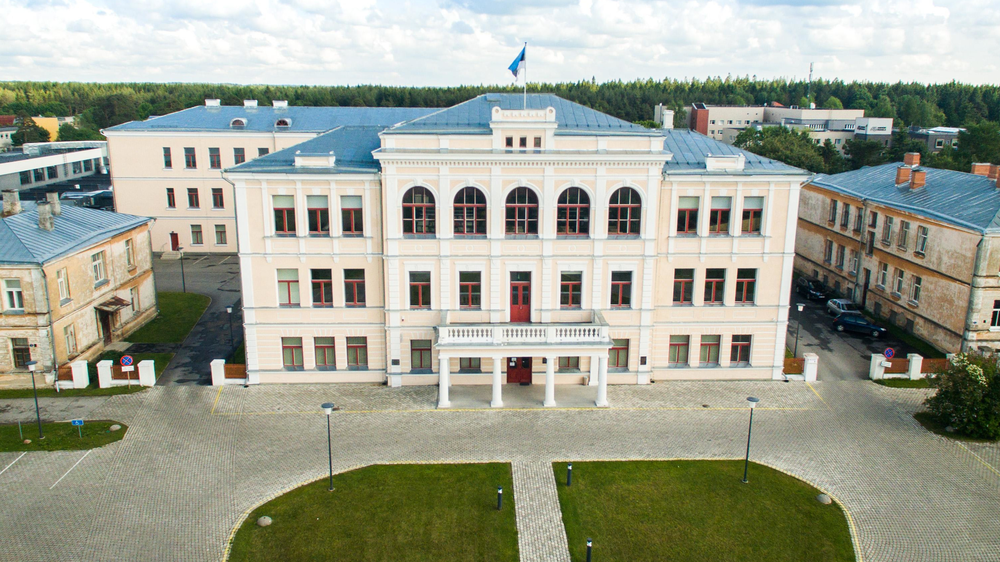
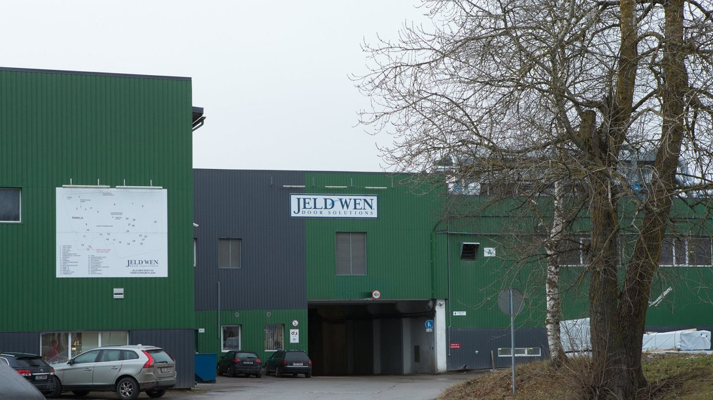
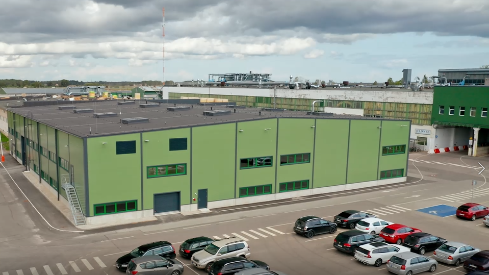

Haridus
Rakvere Põhikool
2012 - 2021

Selles koolis mul oli veidi raskusi õppimisega, kuid ma pingutasin ja paranesin olukorra jooksul.
Rakvere Ametikool
2021 -
Selles koolis saavutasin suurepäraseid tulemusi. Olin IT-alal kaasõpilastest märkimisväärselt edukam, demonstreerides tugevaid oskusi ja pühendumust.
Kogemused
Jeld-Wen Eesti AS
2023 — 2023 (Kevad)
Olin esimese praktika ajal Jeld-Wen Eesti AS IT-osakonnas kolm kuud. Peamine fookus oli töötajate IT-probleemide lahendamisel. Lisaks hooldasin ja sorteerisin veidi sülearvuteid ning IT-laoseisu. Tulin nende ülesannetega väga hästi toime.
Jeld-Wen Eesti AS
2023 — 2023 (Suvi)
Jeld-Wen Eesti AS-i IT-osakonnas praktiseerisin kolm kuud. Minu põhilised ülesanded olid töötajate IT-probleemide lahendamine ja tööstusarvutite hooldus. Tulin nendega hästi toime.
Oskused
Riistvara
- Ethernet rj45 kaablite termineerimine
- Arvutite riistvara probleemide diagnoosimine
- Sülearvuti lahtivõtt ja kokkupanek
- Lauaarvuti komplekteerimine ja kokkupanek
- Kaablite haldamine
- Termopasta vahetus
Tarkvara
- MS Office kasutamine
- Windows, Linux, MacOS käsuliidese kasutamine
- Hyper-V, Virt-manager ja Virtualbox kasutamine
- OBS-Studio kasutamine
- Windows, Linux, Mac OS kasutamine
- AP sätestamine
- Wireless access point sätestamine
- VS Code kasutamine
Arendus
- HTML/CSS
- Python
- Bash
- Powershell
- Powershell From